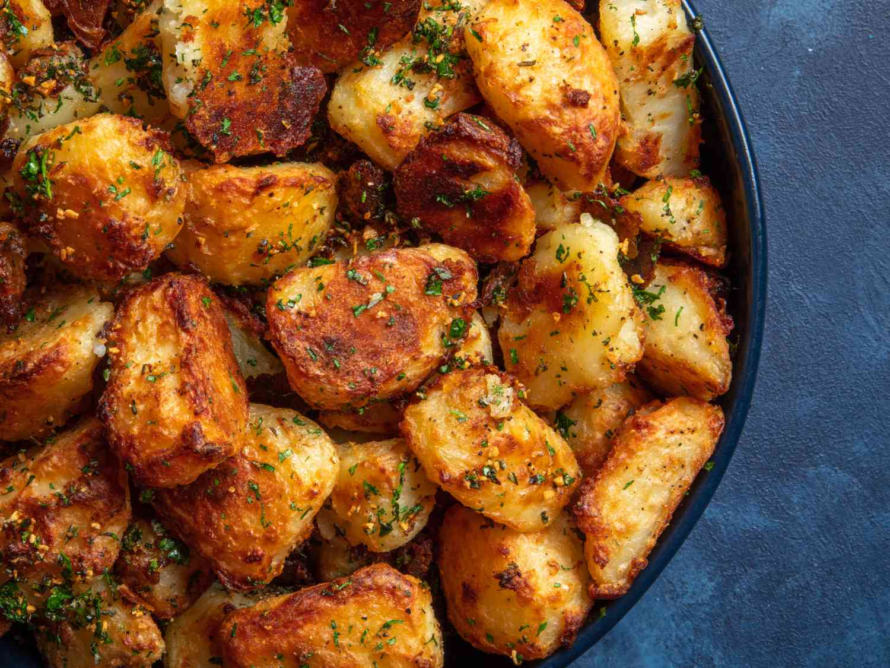

Oven Roasted Potato Recipe
Home Page
Crispy roasted potatoes flavored
with olive oil, garlic, and herbs.
A pleasing potato side dish for any meal!

Ingredients:
- ⅛ cup olive oil
- 1 tablespoon minced garlic
- ½ teaspoon dried basil
- ½ teaspoon dried marjoram
- ½ teaspoon dried dill weed
- ½ teaspoon dried thyme
- ½ teaspoon dried oregano
- ½ teaspoon dried parsley
- ½ teaspoon crushed red pepper flakes
- ½ teaspoon salt
- 4 large potatoes, peeled and cubed